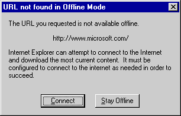

| ||
Offline browsing allows users to view Web pages from the cache, a local repository of files gathered from the Web through normal browsing and the delivery of content subscriptions. Offline browsing is supported by Microsoft® Internet Explorer 4.0 and later. Internet Explorer 5 extends support for offline browsing, making the feature easier for users to discover and use.
Users can choose to work offline by selecting Work Offline on the File menu in Internet Explorer 4.0 and later. When Work Offline is selected, the system enters a global offline state independent of any current network connection, and content is read exclusively from the cache. If the content is not available locally, Internet Explorer informs the user and asks if the user wants to go back online or continue working offline.

This article describes the API elements that enable third-party developers to hook into the offline browsing architecture. It also provides some recommendations to help developers provide a seamless experience for users.
Urlmon.dll and Wininet.dll are at the core of Internet Explorer 4.0 and later. These two DLLs handle all low-level requests made by the browser for Internet resources. Using the Microsoft® Win32® Internet (WinInet) API and URL monikers API, developers targeting Internet, intranet, and extranet environments can easily contribute to a positive offline browsing experience.
Internet Explorer 4.0 and later versions use URL monikers, which in turn use the Win32 Internet functions to perform all network requests, including URL navigation and caching. Win32 Internet functions automatically check the global offline state before making a resource request. If the system is globally offline, Win32 Internet functions attempt to retrieve the resource exclusively from the cache. If the resource is present, the request succeeds. Otherwise, the request fails. If the request fails, Internet Explorer checks if the user is in the global offline state. An application can use the InternetQueryOption function to check the global offline state.
// Returns true if the global state is offline. Otherwise, false.
BOOL IsGlobalOffline(void)
{
DWORD dwState = 0;
dwSize = sizeof(DWORD);
BOOL fRet = FALSE;
if(InternetQueryOption(NULL,
INTERNET_OPTION_CONNECTED_STATE, &dwState, &dwSize))
{
if(dwState && INTERNET_STATE_DISCONNECTED_BY_USER)
fRet = TRUE;
}
return fRet;
}
If the user explicitly chooses to navigate to unavailable content, Internet Explorer uses the InternetGoOnline function to present the user with a dialog box that allows the user to "Connect" or "Stay Offline." If the user clicks Connect, the function invokes InternetAutoDial. This function attempts to establish a network connection and, upon success, takes the system out of global offline mode. If InternetGoOnline succeeds, the system is connected and globally online. An application can then make the request for the resource again.
The following code demonstrates the overall logic.
// Cache the Internet handle if not already available.
DWORD dwAccessType = INTERNET_OPEN_TYPE_PRECONFIG;
DWORD dwInetOpenFlags = 0;
hInternet = InternetOpen(
"007",
dwAccessType,
NULL,
NULL,
dwInetOpenFlags);
hFile = InternetOpenUrl(
hInternet,
szURL,
NULL, 0, 0, 0);
if (!hFile)
{
if (IsGlobalOffline())
{
// If globally offline, ask user for permission to go online.
if (InternetGoOnline(szURL, g_hwnd,
INTERNET_GOONLINE_REFRESH))
{
// Try again now that we're online.
hFile = InternetOpenUrl(
hInternet,
szURL,
NULL,
0,
0,
0);
if (!hFile)
{
InternetCloseHandle(hInternet);
return;
}
}
}
}
If the user chooses to go online and the second request fails, the resource simply may not exist, as is the case when a user specifies a bad URL in the address bar or clicks a stale link.
While it is essential that the user be presented with a dialog box before being taken out of global offline mode, applications should avoid sending the user unnecessary notifications. When the user is viewing links on a page, Internet Explorer 4.0 and later versions provide the user with a visual indicator—a small, crossed-through circle attached to the cursor, known as the offline hand—to indicate that the content is not available in the cache.
By recognizing this cursor, the user is given the chance to preempt the "URL Not Found in Offline Mode" dialog box. The following code can be used to determine if the content at a specified address is available locally.
BOOL IsAvailableOffline(LPCWSTR wszUrl)
{
HRESULT hr;
DWORD dwUsesNet, dwCached;
DWORD dwSize;
if (!wszUrl)
return E_INVALIDARG;
// First, let URL monikers check the protocol scheme.
hr = CoInternetQueryInfo(wszUrl,
QUERY_USES_NETWORK,
0,
&dwUsesNet,
sizeof(dwUsesNet),
&dwSize,
0);
if (FAILED(hr) || !dwUsesNet)
return true;
// Then let URL monikers peek in the cache.
hr = CoInternetQueryInfo(wszUrl,
QUERY_IS_CACHED_OR_MAPPED,
0,
&dwCached,
sizeof(dwCached),
&dwSize,
0);
if (FAILED(hr))
return false;
return dwCached;
}
The offline hand is a cursor resource in Shdocvw.dll. The following code demonstrates how to load and display the cursor.
HINSTANCE hInst = LoadLibrary("shdocvw.dll");
hCursor = (HCURSOR)LoadCursor(hInst,
MAKEINTRESOURCE(IDC_OFFLINE_HAND));
if (hCursor)
SetCursor(hCursor);
Third parties can use the API elements presented above or implement their own. Given the user's explicit permission, here is how an application or component can change the offline mode of the system.
void SetGlobalOffline(BOOL fGoOffline)
{
INTERNET_CONNECTED_INFO ci;
memset(&ci, 0, sizeof(ci));
if(fGoOffline)
{
ci.dwConnectedState = INTERNET_STATE_DISCONNECTED_BY_USER;
ci.dwFlags = ISO_FORCE_DISCONNECTED;
}
else
{
ci.dwConnectedState = INTERNET_STATE_CONNECTED;
}
InternetSetOption(NULL,
INTERNET_OPTION_CONNECTED_STATE, &ci, sizeof(ci));
}
Typically, only application developers should attempt to manipulate the global offline state. Just as applications should minimize the interruption of the user's experience, component developers should focus upon seamless integration into their container's UI. The following section discusses how a specialized container, the Active Desktop™, enables components to provide consistent behavior with minimal additional implementation requirements.
Internet Explorer 4.0 turned the user's desktop into a Web page by introducing the Active Desktop interface. Users can add any content viewable in the browser as an item to the Active Desktop using the Web tab of the system's Display property sheet. Programmatically, Active Desktop items can be added using the IActiveDesktop interface. Custom components such as ActiveX® Controls and Java applets can be integrated into the Active Desktop by embedding them in content inserted into the Active Desktop.
Because the majority of users do not have a persistent connection to a network, components used as Active Desktop items should not make network requests when the user first logs in. A system configured for dial-up use that is not in global offline mode will automatically present the dialer dialog box—a modal dialog box that prompts the user to dial, or "Connect To" the ISP.
The discussion regarding the global offline state makes it clear that applications and components that make calls through URL monikers and Win32 Internet functions need not add any special flags to their requests to achieve offline behavior. Because the global offline state is an integral part of these low-level components, no attempt will be made to access the Internet when the system is globally offline. When the system is not globally offline, however, a network-aware component must consider the case where the system is disconnected from the Internet.
To help components that access network resources exhibit desirable behavior when embedded in the Active Desktop, Internet Explorer 4.0 introduced a new ambient property with a dispatch ID of DISPID_AMBIENT_OFFLINEIFNOTCONNECTED. Before attempting any network requests, an ActiveX control should retrieve the value of this ambient. If the ambient property is TRUE, a component should check the connection state of the system using the InternetGetConnectedState function. If the function indicates that the computer is disconnected, the control should add the appropriate offline flag in its requests to URL monikers and Win32 Internet functions. This will prevent these APIs from displaying dialer UI. Note that a component is free to check the connected state and act appropriately regardless of the container in which it is embedded.
A control need only retrieve the property once at initialization time through the IDispatch interface exposed by the container's client site. A control detects additional changes to all ambients through its implementation of IOleControl::OnAmbientPropertyChange. The following code shows how a control built using the Active Template Library (ATL) might implement this.
#include <idispids.h>
// Cache the container's OFFLINEIFNOTCONNECTED ambient.
HRESULT GetAmbientOffline(LPUNKNOWN pUnkContainer,
BOOL* pfAmbientOffline)
{
HRESULT hr;
if (!pfAmbientOffline || !pUnkContainer)
return E_INVALIDARG;
*pfAmbientOffline = false;
// Obtain container OA interface through its client site.
CComQIPtr<IDispatch, &IID_IDispatch>
spDisp(pUnkContainer);
DISPPARAMS dispParams = {NULL, NULL, 0, 0};
VARIANT vResult = {0};
hr = spDisp->Invoke(DISPID_AMBIENT_OFFLINEIFNOTCONNECTED,
IID_NULL,
0,
DISPATCH_PROPERTYGET,
&dispParams,
&vResult,
NULL,
NULL);
if (SUCCEEDED(hr))
{
// Cache the value in a member variable.
*pfAmbientOffline =
(VARIANT_TRUE == V_BOOL(&vResult) ? true : false);
VariantClear(&vResult);
}
return hr;
}
// Implementation of IObjectWithSite::SetSite:
// Mostly delegates to ATL's default implementation
// but additionally retrieves the ambient.
STDMETHODIMP CAxOffl::SetSite(LPUNKNOWN pUnkSite)
{
HRESULT hr;
if (SUCCEEDED(hr =
IObjectWithSiteImpl<CAxOffl>::SetSite(pUnkSite))
&& pUnkSite)
{
hr = GetAmbientOffline(&m_AmbientOffline, m_spUnkSite);
}
return hr;
}
// Listen for notifications regarding changes to this ambient.
STDMETHODIMP CAxOffl::OnAmbientPropertyChange(DISPID dispid)
{
HRESULT hr;
if (dispid == DISPID_AMBIENT_OFFLINEIFNOTCONNECTED)
{
hr = GetOfflineIfNotConnected();
}
return S_OK;
}
An ActiveX control that uses URL Monikers to make network resource requests should add BINDF_OFFLINE to the bind flags it returns through IBindStatusCallback::GetBindInfo as follows:
void SetBindfFlags(BOOL fAmbientOffline, LPDWORD grfBINDF)
{
if(fAmbientOffline)
{
DWORD dwConnectedStateFlags;
if((!(InternetGetConnectedState(&dwConnectedStateFlags, 0)))
&& (0 == (dwConnectedStateFlags &
INTERNET_CONNECTION_MODEM_BUSY)))
{
// Use the cache.
*grfBINDF |= BINDF_OFFLINEOPERATION;
*grfBINDF &= ~BINDF_GETFROMCACHE_IF_NET_FAIL;
}
else // Use the net; cache if net request fails.
{
*grfBINDF |= BINDF_GETFROMCACHE_IF_NET_FAIL;
*grfBINDF &= ~BINDF_OFFLINEOPERATION;
}
}
}
Similarly, an ActiveX control that uses Win32 Internet functions should add INTERNET_FLAG_OFFLINE to the flags it passes to InternetOpen.
void SetInetOpenFlags(BOOL fAmbientOffline, LPDWORD pdwOpenFlags)
{
// A component should first and foremost pay attention to
// the offline ambient provided by its container.
if (fAmbientOffline)
{
DWORD dwConnectedStateFlags;
BOOL fIsConnected =
InternetGetConnectedState(&dwConnectedStateFlags, 0);
// If not connected and not because the line is busy.
if ( (!fIsConnected) && (0 ==
(dwConnectedStateFlags & INTERNET_CONNECTION_MODEM_BUSY)))
{
// Use the cache exclusively.
*pdwOpenFlags |= INTERNET_FLAG_OFFLINE;
*pdwOpenFlags &= ~INTERNET_FLAG_CACHE_IF_NET_FAIL;
}
else
{
// Do not treat this as an offline operation
// but use the cache if the net request fails.
*pdwOpenFlags |= INTERNET_FLAG_CACHE_IF_NET_FAIL;
*pdwOpenFlags &= ~INTERNET_FLAG_OFFLINE;
}
}
}
While an application developer can use discretion in setting the bind flags by independently displaying a UI if a site is inaccessible, a control should always make an offline request to URL monikers or Win32 Internet functions when it determines the system is disconnected from the network and the OFFLINEIFNOTCONNECTED ambient is set to TRUE. If this request is not made, a repeated, unsolicited online request UI will be presented to the user.
Component authors who want to maintain compatibility with previous versions of Internet Explorer should use dynamic rather than static linking when calling functions such as InternetGetConnectedState. This call was not available in Internet Explorer 3.0x. The following code demonstrates how to load and call InternetGetConnectedState without statically linking to Wininet.lib.
typedef BOOL (WINAPI* PFNINTERNETGETCONNECTEDSTATE)(LPDWORD, DWORD);
HRESULT DynInternetGetConnectedState(LPDWORD pdwFlags)
{
PFNINTERNETGETCONNECTEDSTATE pfnInternetGetConnectedState;
BOOL fConnected;
if (!pdwFlags) return E_INVALIDARG;
HMODULE hModule = LoadLibrary("wininet.dll");
if (!hModule)
return E_FAIL;
pfnInternetGetConnectedState =
(PFNINTERNETGETCONNECTEDSTATE)GetProcAddress(hModule,
"InternetGetConnectedState");
if (!pfnInternetGetConnectedState)
return E_FAIL;
fConnected = (*pfnInternetGetConnectedState)(pdwFlags, 0);
FreeLibrary(hModule);
return (fConnected ? S_OK : S_FALSE);
}
If the component implementing this function is hosted in Internet Explorer 3.0x, the call to GetProcAddress will return NULL, and DynInternetGetConnectedState will return E_FAIL. The component can then either make the network request regardless of the connected state or execute its own code to determine the state using sockets.
The following topics are related to offline browsing.
Overviews
Tutorials
Did you find this topic useful? Suggestions for other topics? Write us!
© 1999 Microsoft Corporation. All rights reserved. Terms of use.